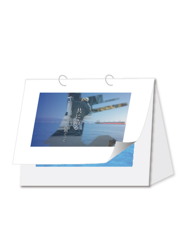
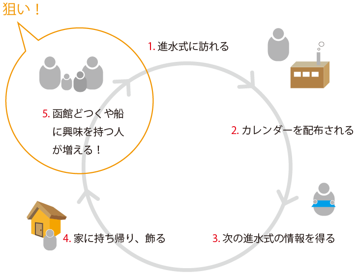
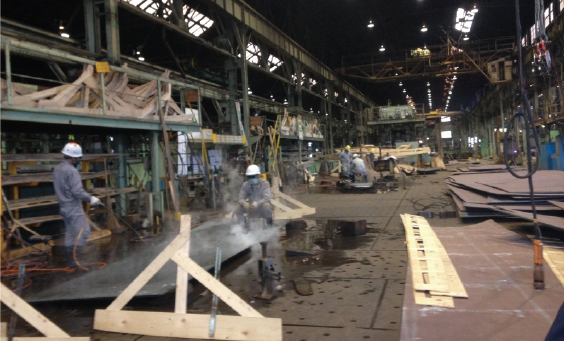

03 どっくヲタクになろう！進水式カレンダー
制作年度：3年次
科目：User Centerd Design(専攻外必修)
使用スキル：Illustrator, Photoshop
人のためにデザインをする楽しさ
現場の人と触れ合い、声を聞くことで相手への思いやりを持って新しい見方をデザインする。
- プロセス
- 作品紹介
進水式ヲタクになろう！どっくカレンダー 提案内容
プロセス
コンセプト
1. 従業員さんの気持ちを知り、同じ体験をすることによってどつく愛を深めよう！
2. 進水式に訪れる人の視線を集め、その人からどつくを広めよう！